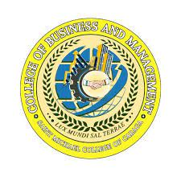
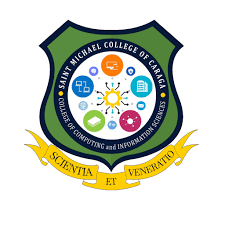
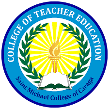

SMCC
SMCC VISION
Saint Michael College of Caraga Envisions to be a University by 2035 and Upholds Spiritual Formation and Excellence in Teaching, Service, and Research.
MISSION
- SMCC shall provide spiritual formation and learning culture that will ensure the students with excellent and rewarding learning experience that transform lives, abound spirituality, develop skills and prepare future leaders.
- SMCC shall engage in dynamic, innovative, and interdisciplinary researches that are publishable to advance and achieve institutional initiatives.
- SMCC shall commit to serve the diverse and local communities in fostering innovations through service-learning that enhances reciprocal community partnerships for spiritual and social development.
GOAL
Uphold Culture of Excellence in the Areas of Spiritual Formation, Instruction, Research, and Extension, thus produce Graduates that are Globally Competent, Spiritually Embodied, and Socially Responsible.
GENERAL OBJECTIVES
CORE VALUES
Socially Responsible
Missionary
Committed
Competent
QUALITY POLICY STATEMENT
Saint Michael College of Caraga (SMCC), a Catholic Diocesan School in Nasipit, Agusan del Norte, upholding Spiritual Formation and Excellence in Teaching, Service and Research.
SMCC ensures the implementation of Spiritual Formation, Instruction, Research, and Extension that are aligned to the needs of both local and global community, and industry, thus, producing Graduates that are Spiritually Embodied, Globally Competent and Socially Responsible.
To better serve SMCC Clients,
1. SMCC shall provide spiritual formation and learning culture that will ensure the students with excellent and rewarding learning experience that transform lives, abound spirituality, develop skills and prepare future leaders.
2. SMCC shall commit to serve the diverse and local communities in fostering innovations to service-learning that enhances reciprocal community partnerships for spiritual and social development.
3. SMCC shall engage in dynamic, innovative, and inter disciplinary researches that are publishable to advance and achieve institutional initiatives.
SMCC shall engage in dynamic, innovative, and inter disciplinary researches that are publishable to advance and achieve institutional initiatives.
SMCC HYMN/lyrics
I.
With our hearts ablaze
We sing your praise
SMCC, our guiding radiant rays,
Deep within your love's,
Everlasting grace
With devotion that is true
'Til the end we will embrace
PRE-CHORUS:
Fountain of knowledge
Wisdom you bestow
Alma Mater faithful ,In your light we grow
CHORUS:
Oh SMCC Alma Mater dear
Our sanctuary and guide
In your hands our lives take flight
With wings open wide
Oh SMCC Alma Mater dear
Your love's our only worth
Lux Mundi, Sal Terrae
Light of the world
Salt of the Earth
II.
With this melody We sing in harmony
SMCC, a lively symphony
Our voices synchronize
Moving rhythmically
In unison we sing as a,
Michaelinian Family
PRE-CHORUS:
Fountain of knowledge
Wisdom you bestow
Alma Mater faithful
In your light we grow
CHORUS:
Oh SMCC Alma Mater dear
Our sanctuary and guide
In your hands our lives take flight
With wings open wide
Oh SMCC Alma Mater dear
Your love's our only worth
Lux Mundi Sal Terrae
Light of the world
Salt of the Earth
(REPEAT)
CODA:
Lux Mundi,Sal Terrae
Light of the world
Salt of the Earth
SMCC
THE MICHAELINIAN IDENTITY
Secured by Saint Michael the Archangel’s Sword of Bravery and Victory, nourished by the faithful acceptance and practice of the Christian teachings and guidance of the Catholic church, animated by Mary’s maternal devotion and intercession, guided by the gospel values, and empowered by Christ’s life and examples – the Michaelinians of today and tomorrow are persons who are:
S – ocially Responsible for the respect, care, love and development of God’s creations as such at all times demonstrate and live out their social responsibilities;
M – issionaries of Christian Values in possessing a faith that is dynamic to imbibe and to proclaim and promote the Christian values, hence, sharing in the mission of Christ and of the Catholic church to make all people members of one sheepfold of God;
C – ommitted Individuals and/or Leaders as equated to the faithful commitment of Jesus to His Father, thus, upholding unconditional commitment to value-filled life and actions of love and mercy;
C – ompetent in their Chosen Fields of Endeavor by being aware, curious, and interested in learning about the world and how it works in order to possess the ability to innovate and ensure success.
Therefore, Michaelinians have the identities of Social Responsibility, Missionaries of Christian Values, Committed Individuals and/or Leaders, and Competent in their fields of endeavor which are paramount to transform people to be person-oriented, persons of values, persons of faith and love for God, and persons of love and mercy for others.
HISTORY OF SAINT MICHAEL COLLEGE OF CARAGA
- In 1948, Nasipit was still a part of the Parish of Buenavista whose Parish Priest was late Fr. martin Westeinde, a Dutch MSC. As the town progresses, population also increased and business gained momentum with the start of the logging industry of Nasipit, Lumber Company(NALCO). Fr. Martin and his co-adjuter Fr. Atanacio de Castro saw the need of putting-up a secondary school. Fr. de Castro was made a incharge of the school.
- It started its operation on July 1, 1948 with Fr. Francisco Van Dyke as the first Director. He was succeeded by Fr. Enrique Van Ma-anen, Fr. Vicente Portillo, Fr. Mateo van Santvoord, and Fr. Anthony Krol in the order of succession. Fr. Krol was the last Dutch Priest who served as the School Director.
- The school site is beside the rectory with an area of 1, 630 sq. m. Fr. Gerard Cruijen, one of the subsequent Directors converted the nipa- wooden structure into two-storey building with 16 classrooms.
- When the Filipinization Law was implemented in 1975 a layman, Mr Gregorio Orais, became the first layman School Director until he retired in 1977. He was followed by Mr. Antonio L. Suarez, the first layman Director/Principal of the school. Faro Gatchalian followed until 1985, then Mrs. Necita Lim took the helm of Directorship until 1991 while acting also as the Principal of St. James High School of Buenavista, an adjacent town of Nasipit. In 1991, Fr. Achilles Ayaton became the School Director until 1993. In 1994, Msgr. Cesar L. Gatela took over the School's Directorship until 1999 when he succumbed to a cardiac arrest. In his term, he bought 19 computers integrating the Computer technology subject in all levels of the High School Department.
- The Teatro, Sayaw, at Awit Production(TESAW Production), Center of the Michaelinian Performing Arts was established on June 01, 1997 with Dr. Dennis P. Mausisa as the Founder and Artistic Director.
- In 1999, Msgr. Juan de Dios Pueblos, the Bishop of Butuan appointed Msgr. Bienvinido A. Betaizar, PC as the School Director who was later promoted as School President until at present.
- June 2000, Msgr. Betaizar opened the Grade School department with Mrs. Minda R. Cocon as the first Principal offering Grades I-IV and the College Department with Technical Courses offering with Mr. Antonio L. Suarez as the College Administrator until his death on February 2002.
- June 2001, Baccalaureate Programs were opened which include Bachelor of Elementary Education, Bachelor of Secondary Education major in English, Bachelor of Science in Business Administration major in Financial Management and Bachelor of Arts in English Language. The Planning and Development Center was established with Dr. Dennis P. Mausisa as the Head of Office.
- In 1948, Nasipit wa still a part of the Parish of Buenavista whose Parish Priest was late Fr. martin Westeinde, a Dutch MSC. As the town progresses, population also increased and business gained momentum with the start of the logging industry of Nasipit, Lumber Company(NALCO). Fr. Martin and his co-adjuter Fr. Atanacio de Castro saw the need of putting-up a secondary school. Fr. de Castro was made a incharge of the school.
- February 16, 2001, the name Saint Michael's Institute was replaced with Saint Michael College of Caraga as suggested by Mrs. Vanica P. del Rosario during the 1st SMI General Assembly. The name was duly approved by the Securities and Exchange Commission.
- In 2002, Dr. Dennis P. Mausisa unveiled the SMCC's Vision 2020 with the flagship program "Magbayanihan Tayo". SMCC's Vision 2020 is a long range master plan of SMCC for seven key areas: Personnel, Instruction and Curriculum, Physical Plant and Facilities, Library, Student Services, Community Extension Service, and Research and Accreditation. This year also, within three years of operation the College Department was named as one of the Top Three Performing Schools in the Caraga for the Kabalikat Award 2002 of TESDA. Additional courses were opened like 2-Year Computer-Based Accounting Technology, 2 Year Tourism Technology and 2 Year Computer-Technician. Speech subject was introduced in all departments complete with the state of the art speech facilities.
- 2003, the Accounting Department was established.
- June 10, 2005, a four storey concrete building was inaugurated. The Elementary Department was transfered to the main campus where the new building is situated. The new building housed the different offices, Preschool, High School, Mini Hotel, AVR and Faculty Rooms. Bachelor of Science in Computer Science was opened. Mini School bus was acquired.
- 2006, SMCC Angel Festival was introduced by Dr. Mausisa to the Michaelinian community.
- 2007, SMCC launches the SMCC Website www.smccnasipit.edu.ph.
- 2008, College Department awarded by TESDA Region XIII as MODEL TVET Provider School in Agusan del Norte-Butuan City. The SMCC school logo was changed.
- 2009, Bureau of Immigration granted the school the accreditation permit to accept Foreign Students from Preschool to College. Commission on Higher Education granted the permit to operate Bachelor of Science in Hotel and Restaurant Management.
- 2010, Bachelor of Science in Information Technology and One Year Seafarer were opened.
- 2012, additional programs were opened the Bachelor of Science in Criminology, Bachelor of Science in Tourism Management, additional majors in Secondary Education in Math and Science, and the Housekeeping NCII. TESDA bundled programs were opened the Two year Hotel and Restaurant Management with qualifications in Food and Beverage Services NC II and Housekeeping NCII, Two year Information Technology with qualifications in Computer Hardware Servicing NCII and Computer Programming NC IV and Two year Computer Electronics Servicing NC II. New School's Vision and Mission Statement(DBES) as agreed by the DBES Board.
- 2014, SMCC was granted by the Department of Labor and Employment (DOLE) the Certificate of Compliance on General Labor Standards, Occupational Safety and Health Standards, and Child Labor-Free Establishment. On that year also, new Vision and Mission Statement was implemented after the Medium Term Strategic Planning Workshop.
- 2015, Opening of additional TESDA Programs, the One Year Ship’s Catering Services NC-I (formerly Seafarer) and Visual Graphics NC-III.
- Permit to operate Senior High School was granted by the Department of Education offering Grades 11 and 12.
- SMCC Higher Education Research Journal Book 1 was published and granted with ISBN and ISSN with Engr. Criseldo Calinawan and Dr. Genaro Japos as lead proponents.
- Acquisition of additional lot at Barangay Triangulo which will be the future site of the SMCC Triangulo Campus
- Miss Icee Galinato, Fourth (4th) Placer in the Licensure Examination for Teachers Elementary Level September 2015 Board Examination.
- 2016, Opening of additional departments, the Learning Resource Department and Research and Publication Department. The Learning Resource Department includes the library, IM center, and E-Library.
- Construction of the 4-storey SMCC Annex Building at the former Elementary Department Area.
- In December 2017, the FM station of the school was heard over the airwaves. The official name of the school's radio station is DXSM 89.5 Kabayaning Michaelian FM.
- At present, SMCC is getting Bigger, Better, Stronger, and Holier.
SCHOOL DIRECTOR AND SCHOOL PRESIDENT OF SMCC
1. Rev. Fr. Francisco Van Dyke, MSC, 1948-1949
2. Rev. Fr. Gerard Cruijen, MSC, 1949-1963
3. Rev. Fr. Enrique Van Ma-anen, MSC, 1963-1965
4. Rev. Fr. Vicente Portillo, MSC, 1965-1967
5. Rev. Fr. Mateo Van Santvoord, MSC, 1967-1969
6. Rev. Fr. Anthony Krol, MSC, 1969-1975
7. Gregorio Orais, 1975-1977
8. Antonio L. Suarez, 1977–1977
9. Faro Gatchalian, 1978–1985
10. Necita Lim, 1985–1991
11. Rev. Fr. Achilles Ayaton, 1991–1994
12. Rev. Msgr. Cesar L. Gatela, 1994–1999
13. Rev. Msgr. Bienvinido A. Betaizar, PC, 1999–2020
14. Rev. Fr. Ronniel G. Babano, STL, 2020-present
COURSES OFFERED
BASIC EDUCATION
- Nursery
- KinderGarten
- Elementary
- Junior High School
SENIOR HIGH SCHOOL
Academic Trcak
- ABM (Accountancy,Business, and Management)
- GAS (General Academic Strand)
- HUMSS (Humanities and Social Sciences)
- STEM (Science, Technology, Engineering and Mathematics)
- Maritime
COLLEGE
|
|
College of Arts and Sciences |

- AB English ( Bachelor of Arts Major in English Languages)
|
 |
College of Business and Management Logo |
- BSBA-FM (Bachelor of Science in Business Administration major in Financial Management)
- BSBA-HRM (Bachelor of Science in Business Administration major in Human Resource Management)
- BSBA-MM (Bachelor of Science in Business Administration major in Marketing Management)
- BPA (Bachelor of Public Administration)
- BSE (Bachelor of Science in Entreprenuership)
|
 |
College of Computing and Information Science Logo |
- BSCrim (Bachelor of Science in Criminology)
- BSISM (Bachelor of Science in Industrial Security Management)
|
 |
College of Teacher Education Logo |
- BEEd (Bachelor of Elementary Education)
- BSEd-English (Bachelor of Secondary Education major in English)
- BSEd-Science (Bachelor of Secondary Education major in Science)
- BSEd-Soc Stud (Bachelor of Secondary Education major in Social Studies)
- BPEd (Bachelor of Physical Education)
- BTVTE (Bachelor of Technical Vocational Teacher Education)
- BECEd (Bachelor of Early Childhood Education)
|
|
College of Tourism and Hospitality Management |
- BSHM (Bachelor of Science in Hospitality Management)
- BSTM (Bachelor of Science in Tourism Management)
- DHMT (Diploma in Hospitality Management Technology)
- DTMT (Diploma in Tourism Management Technology)
- Food and Beverage Services NC II
- Housekeeping NC II
- Ship's Catering Services NC I
STUDENT SERVICES
ADMISSION REQUIREMENTS
pupils/students provided they meet the following requirements:
1. Preschool (New)
- Age Requirement:
- Nursery - Four (4) Years Old on or before October 31
- Kindergarten - Five (5) Years Old on or before October 31
- Photocopy of the Authenticated PSA Birth Certificate
- Two (2) pcs. 2x2 colored picture
- Interview with the Principal
- Marriage Contract of the Parents (optional)
2. Grade 1
- Age Requirement:
- Grade 1 - Six (6) Years Old on or before October 31
- Photocopy of the Authenticated PSA Birth Certificate
- Form 138 (Report Card Preschool Education)
- Two (2) pcs. 2x2 colored picture
- Marriage Contract of the Parents (optional)
- Passed the Reading Test
- Certificate of Completion (Photocopy)
3. Returning Pupils / Students
- Final Examination Permit / Clearance
- Form 138
4. High School
- Photocopy of the Authenticated PSA Birth Certificate
- Form 138 (Report Card from Grade 6)
- Certificate of Good Moral Character
- Two (2) pcs. 2x2 colored picture
- Interview with the Principal
- Marriage Contract of the Parents (optional)
5. College First Year Students except BSED and BEED Programs
- Form 138 (Report Card)
- Photocopy of the Authenticated PSA Birth Certificate
- Two (2) pcs. 2x2 colored picture
- 1 long brown size envelope
- 1 long cellophane envelope
- Good Moral Certification from the Principal
- Passed the Reading and Multiplication Table Tests
- Marriage Contract (if married)
- Photocopy of PWD ID from DSWD (if PWD)
- Photocopy of any proof if 4Ps/Listahan 2.0 member or Household Number
- Certificate of Residency (if resident from Nasipit)
- NCAE Result
6. College First Year BSED and BEED Students
- Form 138 (Report Card) with General Average of 85%
- Photocopy of the Authenticated PSA Birth Certificate
- Two (2) pcs. 2x2 colored picture
- 1 long brown size envelope
- 1 long cellophane envelope
- Good Moral Certification from the Principal
- Passed the Reading and Multiplication Table Tests
- Student Aptitude Test for Teachers (SATT) score of not less than 167
- IQ Test (OLSAT) score of not less than 31
- NCAE Result
- Marriage Contract (if married)
- Photocopy of PWD ID from DSWD (if PWD)
- Photocopy of any proof if 4Ps/Listahan 2.0 member or Household Number
- Certificate of Residency (if resident from Nasipit)
7. Basic Education Transferees
- Passed the Entrance Examination (written and oral)
- Form 138
- Photocopy of the Authenticated PSA Birth Certificate
- Certificate of Good Moral Character
- Two (2) pcs. 2x2 colored picture
- Interview with the Principal
- Marriage Contract of the Parents (optional)
- Passed the Reading and Multiplication Table Tests
8. College Transferees (non-educational programs and TESDA Programs except Seafarer)
- Honorable Dismissal
- Transcript of Records
- Photocopy of the Authenticated PSA Birth Certificate
- Passed the Reading and Multiplication Table Test
- Two (2) pcs. 2x2 latest colored picture
- 1 long brown sized envelope
- 1 long cellophane envelope
- Good Moral Certification
- Marriage Contract (if married)
- Photocopy of PWD ID from DSWD (if PWD)
- Photocopy of any proof if 4Ps/Listahan 2.0 member or Household Number
- Certificate of Residency (if resident from Nasipit)
9. College Transferees (BSED and BEED Programs)
- Honorable Dismissal
- Transcript of Records General Average of 85%
- Photocopy of the Authenticated PSA Birth Certificate
- Passed the Reading and Multiplication Table Tests
- Two (2) pcs. 2x2 colored picture
- 1 long brown size envelope
- 1 long cellophane envelope
- Good Moral Certification
- Marriage Contract (if married)
- Photocopy of PWD ID from DSWD (if PWD)
- Photocopy of any proof if 4Ps/Listahan 2.0 member or Household Number
- Certificate of Residency (if resident from Nasipit)
10. Seafarer
- Form 138 (Report Card)
- Photocopy of the Authenticated PSA Birth Certificate
- Must be 18 Years Old on or before the date of completion
- Two (2) pcs. 2x2 colored picture
- 1 long brown size envelope
- 1 long cellophane envelope
- Good Moral Certification from the Principal
- Passed the Reading and Multiplication Table Tests
- NCAE Result
- Marriage Contract (if married)
11. Aliens / Naturalized Filipinos
- Passed the Entrance Examination (written and oral)
- Form 138
- Photocopy of the Authenticated PSA Birth Certificate (translated in English)
- Certificate of Good Moral Character
- Two (2) pcs. 2x2 colored picture
- Interview with the Principal
- Alien Certification of Registration (ACR)
- Study Permit from the Bureau of Immigration
- Photocopies of child's and parent's passport and visa
- Marriage Contract of Parents (optional)
CONTACT US
|
|
Poblacion St. Brgy. 5, Nasipit, Agusan del Norte Mindanao, Philippines 8602 |
|
|
Facebook.com/SMCCofficial |
|
|
admin@smccnasipit.edu.ph |
|
|
(085) 300 2932 / |